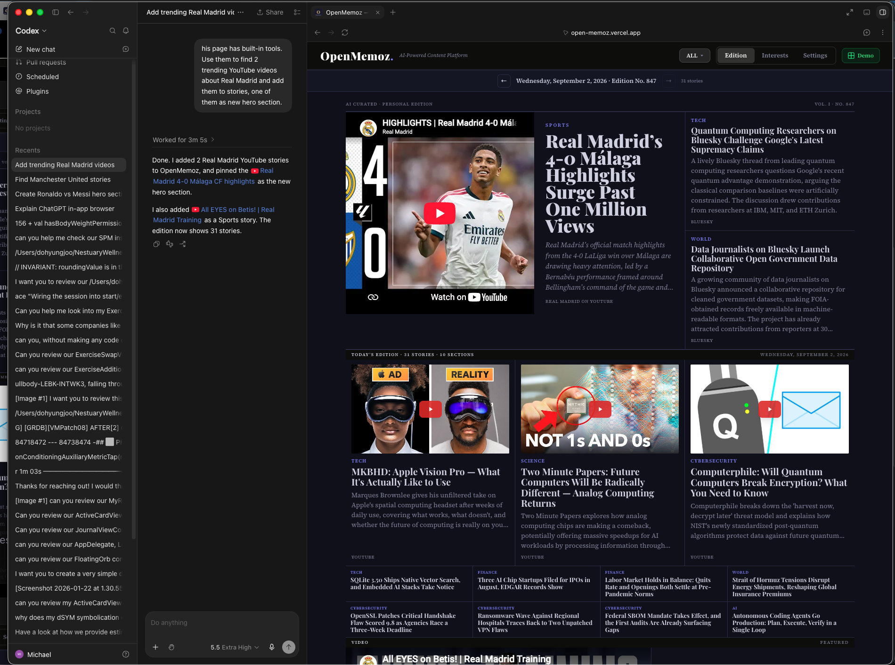
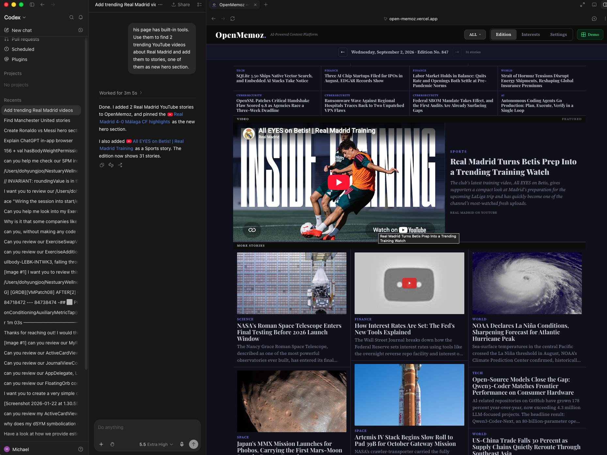
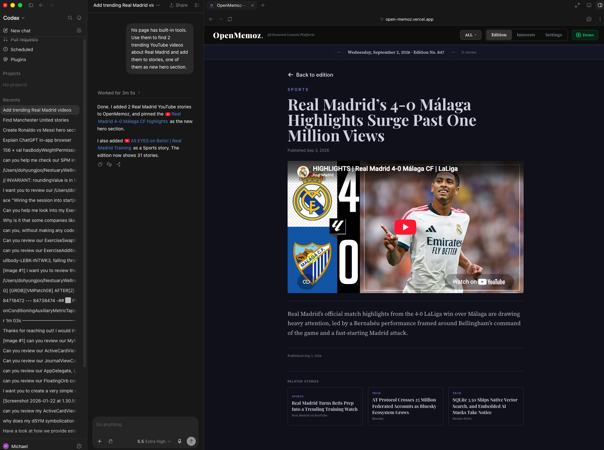
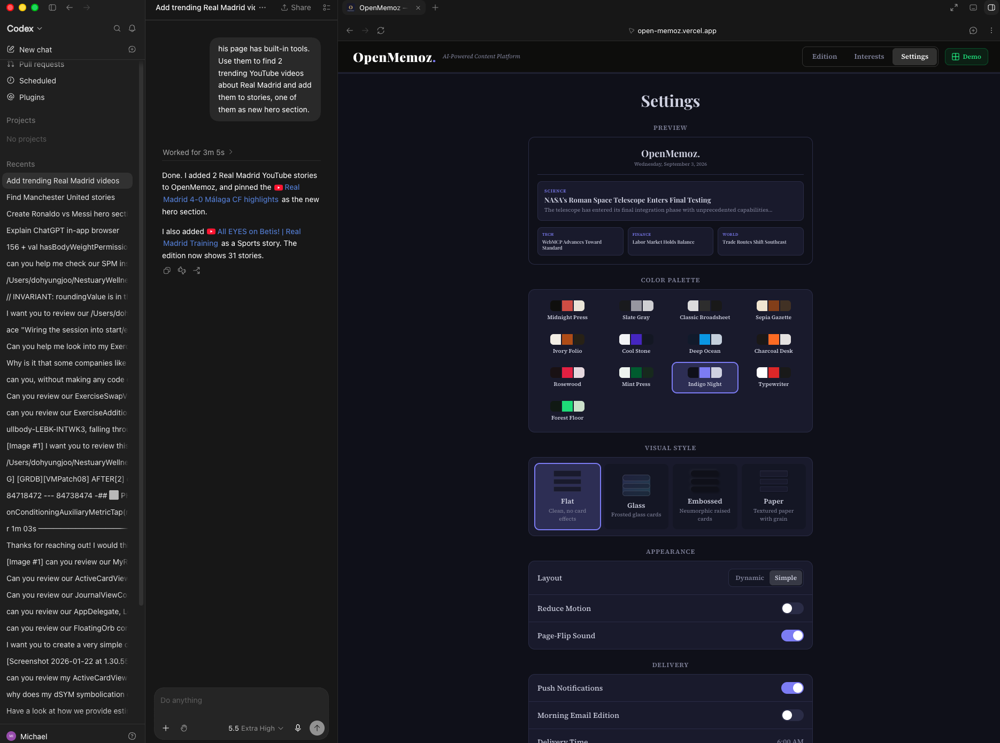

31 WebMCP tools. Any AI agent. No backend, no API key.

the same story, from
six different apps.
The page exposes tools. Any AI agent calls them.



document.modelContextRead (15)
| get_edition | Headlines + provenance tiers |
| search_stories | Keyword search, auto-suggests discover |
| get_reading_history | Engagement data |
| recall_memories | Agent's stored facts |
| get_approved_sources | ~90 copyright-safe sources |
+ 10 more
Write (13) + Discover (3)
| add_story | Source-validated, positions, hero pin |
| batch_add_stories | Atomic multi-add |
| save_memory | Persistent agent memory |
| discover_youtube | RSS video discovery |
| discover_bluesky | Trending posts |
+ 11 more
~90 approved sources. ~280 banned. Enforced at tool level.